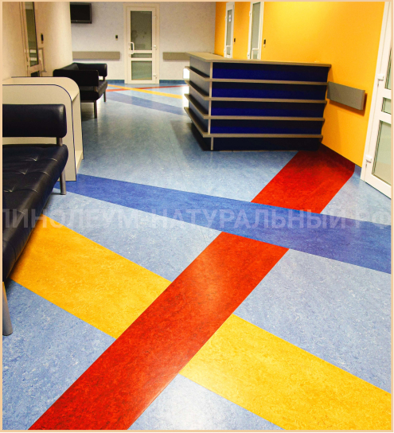
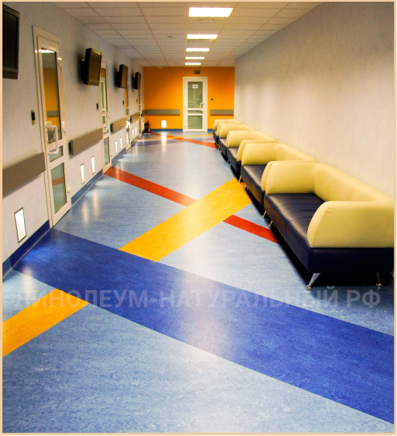
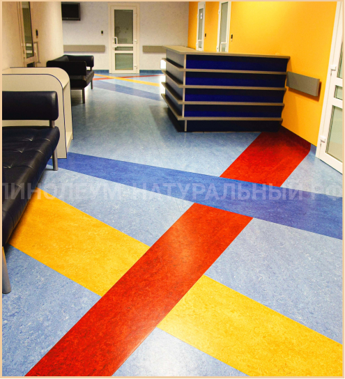
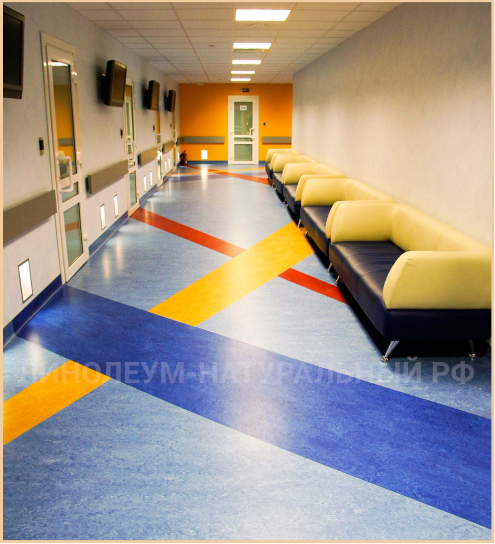

Натуральный линолеум фото в интерьере клиника «Эксимер»
В этом разделе вы можете посмотреть фототографии в интерьере натурального линолеума, в одном из центров клиники «Эксимер». Клиника «Эксимер» — это современное многопрофильное офтальмологическое учреждение, которое успешно помогает людям решить проблемы со зрением независимо от возраста пациента.Наша компания предоставила свои услуги по поставке, настилу и нанесению мастики на поверхность натурального линолеума.
Натуральный линолеум в медицине
При выборе материала для клиники «Эксимер» стояла задача подобрать экологически чистое напольное покрытие, которое будет обладать антибактериальными свойствамии, вдобавок, позволит «оживить» интерьер, абстрагировавшись от типичного формата рядовой клиники.
При решении поставленной задачи, нашими специалистами была подобрана коллекция натурального линолеума Marmoleum Real (фото в интерьере смотрите ниже) компании Forbo, которая отвечала всем требованиям, выдвинутым представителями клиники.
Вдобавок, большой выбор цветовых решений натурального линолеума Marmoleum Real (на фото в интерьере) позволил создать оригинальный дизайн помещения, таким образом, сформировав индивидуальный стиль медицинского цчреждения.
Используемые артикулы коллекции Real:
Объект 2013 года
Фотографии в интерьере клиника «Эксимер»

 


